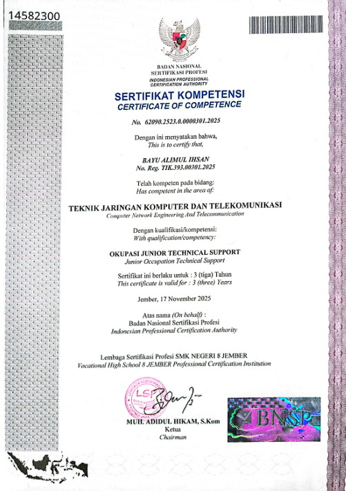
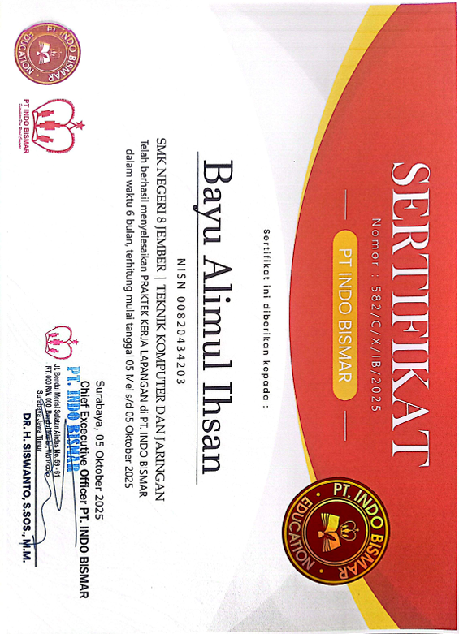
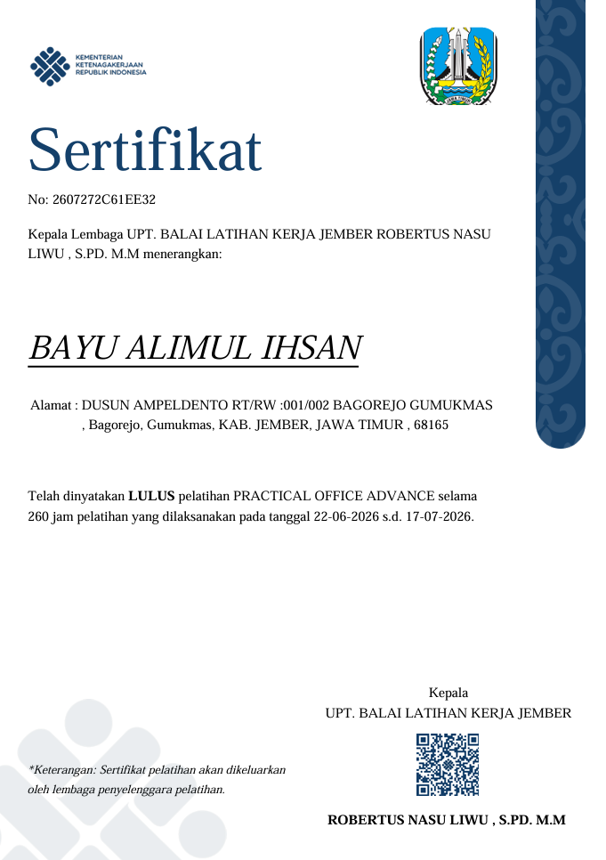
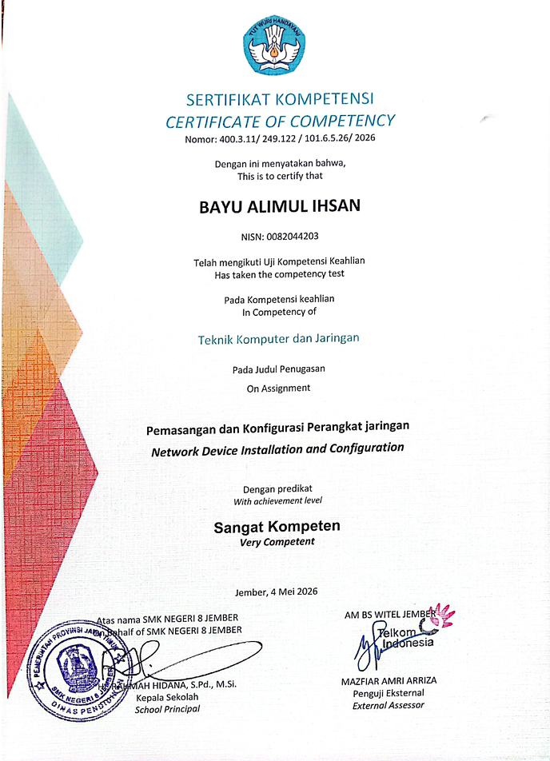

Sertifikat
Bukti kompetensi dari pelatihan dan pengalaman kerja lapangan.

Sertifikat BNSP
Junior Technical Support
Diterbitkan oleh SMKN 8 Jember — Uji Kompetensi Keahlian (UKK)

Sertifikat PKL
Praktik Kerja Lapangan
Diterbitkan oleh PT Indobismar

Sertifikat Pelatihan
Practical Office Advance
Diterbitkan oleh UPTD BLK Jember

Sertifikat UKK
UKK Networking / Support
Diterbitkan oleh PT Telkom Jember

Sertifikat BNSP
Practical Office Advance
Diterbitkan oleh LSP BPVP Banyuwangi